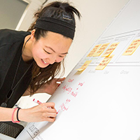
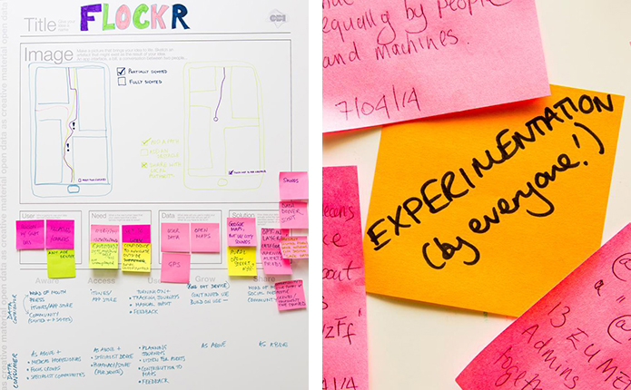
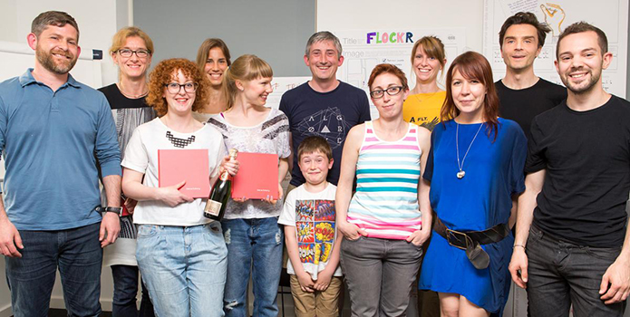

Guest post: Data Jam! Exploring creative uses of open data
The iconic products of the future won't be made of plastic or glass - they will be made of data
Chris Downs, service designer
Students and staff from University of the Arts London met at the ODI on a sunny Saturday 17 May for a hands on workshop run as part of the Restless Futures programme at Central Saint Martins.
Facilitated by service design pioneer Chris Downs, and the ODI's art associate, Julie Freeman, the goal of the workshop was to introduce art and design students to the possibilities for making creative uses of open data and to explore data driven ideas by identifying social, financial, environmental problems that need to be solved.

Chris kicked off the day with an inspiring presentation about designing with data, provoking a series of questions: What is Open Data? Where can we find it? Why should we think about designing services with it? What methods and processes can we use? Artists Kasia Molga and Fabio Lattanzi Antinori then presented their own data driven artworks, providing further insights into creative uses of data.
A working lunch was next: our task was to identify problems or opportunities relating to the environment, education, business and commerce, finance, transport, or health and well-being. We then formed 5 teams around the identified issues, and were asked to design a service or product that would use open data to address them. The afternoon was spent furiously working to identify and describe our users, their needs, the data we might use and our proposed solutions. This is what the teams came up with:
Serendipity - a service that enables people to trade their skills and experience instead of relying on money, using data created through endorsements.
Skool of Different Thoughts - a vision for the future of education, where teaching models are designed around the different learning styles and values of children.
Bank of Trust - A design for a future where knowledge is prescribed by the NHS and trust becomes the new currency.
Flockr - a mobile app designed to help partially sighted people navigate the city, using open street maps, gps and user generated data.
Echo n - a service that removes space debris by enablng customers to bid for it through online trading.
Finally, the teams pitched their ideas to Gavin Starks, the ODI's CEO, Ulrich Atz, Head of Statistics, and curator Shiri Shalmy, and after some deliberation, the prize went to the Flockr team.

It was an energetic, thought provoking day, with a high level of intellectual rigour demonstrated by UAL’s students. This is encouraging, because as Chris says, it is their responsibility to understand the properties and affordances of open data, so they can begin forging the iconic products and services of the future.

This event was organised by artist and PhD student Charlotte Webb @otheragent www.otheragents.net
For more information about Restless Futures visit the CSM website, or search for #restlessfutures on Twitter. CSM Digital Projects Director Jo Morrison, has written a blog post about the event on the Digital Present blog.